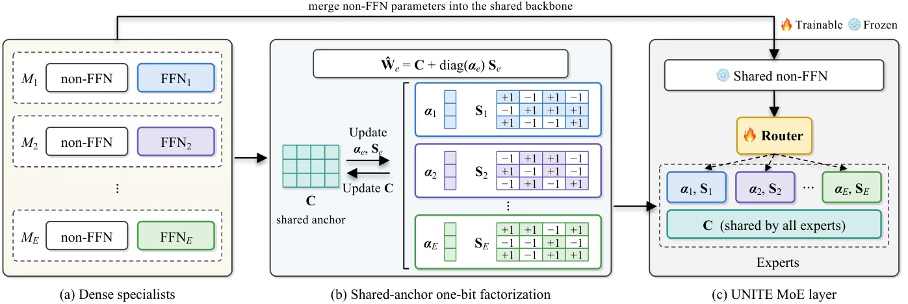
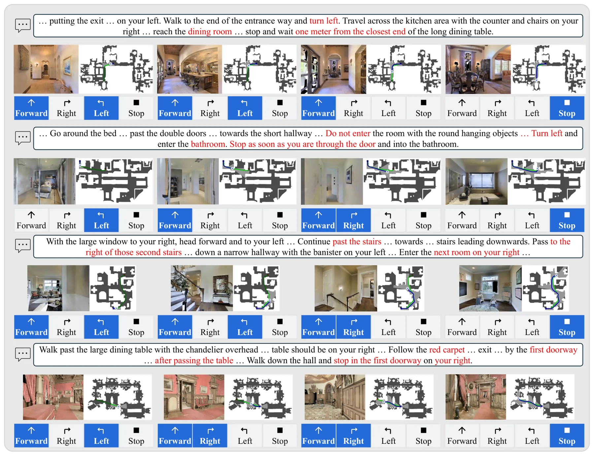
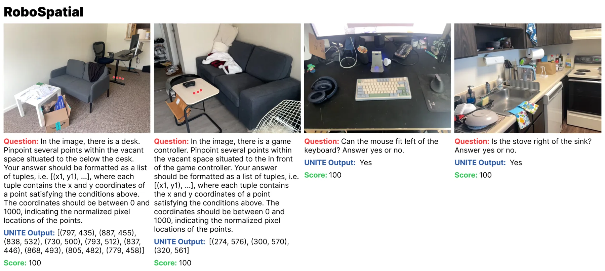
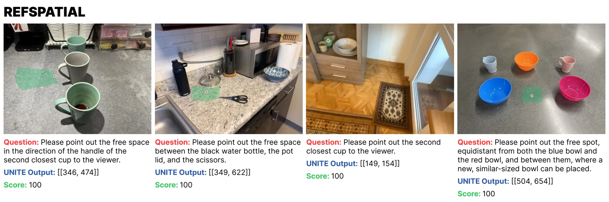
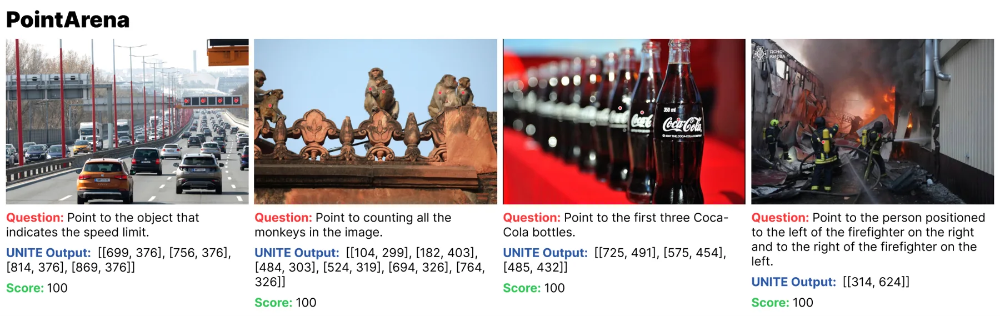

UNITE：用共享锚点 + 一比特分解，把多个具身 VLM 专家压进一个可路由模型
UNITE: Consolidating Embodied VLM Specialists via Shared-Anchor One-Bit Factorization
一句话：它把“多个专家之间的差异”从共享权重里剥离出来，压成一比特残差，再用一个极小的路由器决定哪个 token 走哪个专家。真正值得抄的是它的分阶段拆账（专家构造 → 一比特压缩 → 路由适配）和“锚点也参与优化”这个反直觉的小改动：固定锚点时一位残差无法补偿行的单尺度限制，把锚点当变量能把重建误差再降 20–22%。
Total weight storage (4 experts)
R2R Val-Unseen success rate
Mean retention over 22 benchmarks
作者、单位与技术谱系 · Research context
作者与单位
研究脉络
- Branch-Train-MiX方法基座关系：直接沿用“每个专家保留完整 FFN、其余参数平均成共享 backbone”的稠密→MoE 构造，本文只替换专家库的存储方式。[论文 §III-A 与参考文献 [20]]
- BitDelta / DeRS / D2-MoE表示上游关系：这些工作都用“固定共享分量 + 低比特或低秩残差”压缩专家；本文的差异是把共享分量从固定值改成优化变量。[论文 §II 与 Fig. 4]
- 本篇推进：锚点参与优化的联合分解 + 压缩后路由适配本篇推进关系：把“锚点怎么选”变成优化问题，并且在压缩后的专家库上重新适配路由，而不是沿用为未压缩权重训练的路由器。[论文 §III-B、§III-C]
合作网络
- ACE-Brain-0.5 与 UNITE 的共同署名ACE-Brain 团队（arXiv 2607.04426） → UNITE关系：共同署名[论文参考文献 [4] 与 Table II]
- 四川大学 ↔ ACE RoboticsSichuan University → ACE Robotics关系：同一作者双隶属[论文首页脚注]
- ACE Robotics ↔ 南洋理工大学ACE Robotics（Zhi Hou、Xiaogang Wang） → Nanyang Technological University（Anke Tang、Dacheng Tao）关系：共同署名（跨机构）[论文首页脚注与通讯作者标注]
单位与角色取自论文首页脚注；共著边只依据参考文献作者列表与同一篇论文的署名，不推断师生或实验室隶属关系。ACE-Brain-0.5 的编号来自 UNITE 的参考文献条目，需以其 arXiv 页面二次核对。
方法本质拆解 · What actually changed
是不是微调？
只训路由：backbone、锚点 C、行缩放 α、二值符号 S 全部冻结，可训练参数 589,824 个，不到 8.8B 激活参数的 0.01%。路由适配的训练数据是 55,757 条、18 个来源的视觉语言样本，训练时用 top-2 让梯度穿过混合权重，评测用 top-1。分解阶段完全无数据、无梯度，只是逐层的闭式交替更新（10 次）加一次 BF16 舍入。
有没有额外约束？
表示层有两条硬约束：每个专家的偏差被限制为“每输出行一个非负缩放 + 每元素 1 bit 符号”，因此一行只能表达一个幅值；锚点 C 在专家之间共享，所以每增加一个专家只要 1+16/I 比特/权重。路由层用 top-k 归一化，k=1 时系数恒为 1、梯度不经过混合权重，这也是训练必须用 top-2 的原因。
推理/后端到底做了什么？
推理是按 token 路由的标准 MoE：每个 token 只评估被选中的一个 FFN 专家（默认 top-1），激活参数 8.8B，与单个稠密专家相同；没有额外的匹配、检索、图优化或后处理，也没有全局 BA。实测峰值显存从 50.6 GB 降到 21.0 GB，说明存储压缩确实转成了部署收益。
方法本质是什么？
本质是把“专家之间的冲突”从参数空间搬到路由空间：冲突的部分不再强行共享权重，而是各留一份一比特残差，由路由器按 token 决定用谁。它没有做的是：没有让专家互相蒸馏、没有改变任何专家的表达能力上限（仍是一比特残差），也没有引入新的几何或时序模块，所以视频类跨帧推理的能力损失无法靠路由补回来。
输入是四个共享初始化的专家权重与少量路由监督，改变的位置是专家 FFN 的存储形式（共享锚点 + 每行缩放 + 1 bit 符号），动作是闭式交替拟合锚点并只训 0.6M 路由参数，直接效果是 70.1 GB 降到 20.3 GB 且 R2R 成功率反超导航专家 2.1 个点。

桥接价值Bridge
桥接价值
我们同时维护多套数据先验（城市、室内、矿区/野外），典型做法是要么各训一个模型、要么强行合并然后掉点，UNITE 给出第三条路：共享底座 + 每套先验一个可路由分支 + 只训路由。存储账也很实际：四个 8B 专家 70.1 GB 压到 20.3 GB，只比单模型多 16%，这对边缘卡上“一个模型服务多场景”是可直接比较的量级。方法论上更有价值的是它的分阶段评估：把“专家构造造成的掉点”和“压缩造成的掉点”分开，这恰好对应我们判断“精度下降是数据先验不足还是量化/蒸馏引入”的需求。
方法与模块Method
方法摘要
第一阶段做专家构造：每个 decoder 层保留四个专家各自的 gate/up/down 三个投影，作为一组一起路由；非 FFN 参数（注意力投影、norm、embedding、输出头）合并，注意力投影用“范数重标定的平均”避免方向冲突导致范数塌缩。第二阶段做共享锚点一比特分解：把 gate 与 up 按行拼成一个权重组、down 单独一组，对每组解 min Σ_e ||W_e - C - diag(α_e)S_e||²，交替更新 S_e=sign(W_e-C)、α_e 取该行残差绝对值均值、C 取 Σ(W_e - diag(α_e)S_e)/E，迭代 10 次后把 C 与 α 舍入到 BF16 并按存储锚点重算符号。第三阶段只训路由：用中心化后的 gate/up 矩阵的首个右奇异向量初始化路由行，再用 55,757 条、18 个来源的监督数据做 top-2 训练的负载均衡 + 语言建模损失。
可迁移模块
第一是“锚点可优化”的分解思路：任何“共享底座 + 每任务低比特残差”的存储方案都可以把底座当变量联合拟合，成本只是若干次逐元素迭代，不需要数据也不需要梯度。第二是 SVD 初始化路由：不需要标注就能得到“这个专家在输入空间的独特方向”，对多先验路由是很便宜的冷启动。第三是同存储对照（一比特 vs INT4）：它揭示两种表示的错误分布不同——一比特在 17/22 个理解基准上更好，INT4 却保住了视频基准 VSI（61.9 对 46.7），说明“压多少比特”要按任务类型选。

证据Evidence
关键证据与数字
存储（Table I）：四个独立专家 70.1 GB / 峰值显存 65.6 GB；未压缩 MoE 50.2 / 50.6 GB；UNITE 20.3 / 21.0 GB，相对未压缩 MoE 降 59.6%，相对独立部署降 71.0%。导航（Table III/V）：R2R Val-Unseen 成功率 59.6%、SPL 53.4%、NE 4.5 m，导航专家为 57.5%/51.2%/4.7 m，最好的静态合并（Fisher）为 55.2%/48.0%/5.2 m。3D 场景理解（Table II/IV）：Scan2Cap 102.1 对静态最好 86.4、对最佳专家 83.0（+19.1）；ScanQA 105.6 对 101.8/97.7；22 个基准的平均保留率 98.8%，与最强静态方法的 98.6–98.9% 持平。
边界与下一步Limits & Next Step
边界与风险
唯一明显掉点是视频基准 VSI：UNITE 46.7，Model Soup 63.6；帧数实验显示未压缩 MoE 从 4 帧到 64 帧能涨 17 个点，一比特专家库则一直在 46.8–48.8 之间不涨，作者据此判断一比特分解限制了跨帧证据的使用——这是压缩的失败边界，而不是数据问题。第二个风险是评测口径：路由适配用的 55,757 条监督里含 R2R、RefSpatial、VSI-590K 等与评测同族的数据，因此“超过源专家”的部分增益有多少来自路由看到了同分布样本，原文没有做去污染的对照。第三个边界是它只验证了一个主干家族（Qwen3-VL-8B）与一个语言模型扩展（Llama-3.1-8B），没有真机部署，也没有动作头。
下一步实验
第一步在我们自己的多场景先验上复现“分阶段拆账”：先合 backbone 不压专家、再压一比特、最后训路由，每步记录下游指标，确认掉点发生在哪一层。第二步做同存储对照：一比特符号残差 vs INT4 分组量化，重点看“需要跨帧/跨时段证据”的任务（时序建图、动态场景），验证 UNITE 的失败边界是否可复现。第三步把路由监督换成完全不含评测族的样本，量化同分布泄漏对“超过专家”这一结论的贡献。







